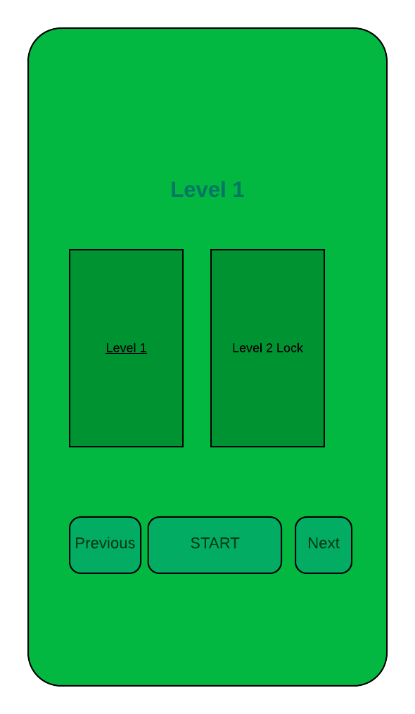

SIT708 Mobile Systems Development
Assignment 1
Project Plan
Name: HO MINH THANH
SID: 212569159
Marking Justification
Mark Aimed for (%): 85%
| Criteria | Grade I Want | Evidence |
|---|---|---|
| Presentation | HD |
|
| Rich text | HD |
|
| Explanation | HD |
|
| Competitor Analysis | HD |
|
| Features | HD |
|
| Milestones | HD |
|
| Design | HD |
|
| Data | HD |
|
| API | HD |
|
1. Overview
The app that I am going to make call "ZBrain", it is a game that design to help the users to exercise their brain that contributing to study better at school, focus at work and importantly maintaining psychological well-being.
There will be different level of the game, the user allows to play to the next level when they are completed the certain level. It will be select the combination of two topics:
- Logic
- Memory match
Firstly, the logic of the game that is designed to be natural and simple way that can suitable for most people. That involving:
- Finding the unique item in the collection of similar things
- Selecting to ascending/descending number
- Multiple choice question allows the users to select the correct answer base on the knowledge
Secondly, memory match is concentration game that contains matching images with different topics with well design. The board size varies depend on the difficulty per level (2x2 tiles, 3x3 tiles, 4x4 tiles, etc.). All of the cards (images) are laid face down on a surface. In order to play the game, the user need to tap to open up to two cards at any time, and when they are a match then they stay revealed. When they are not match they will face up again. Therefore, player is required to remember cards positions to try and match all cards in the fewest steps possible. There will be the time limit and the number step allow to complete the game.
When the users finish each level, the app will be rating their performances.
2. Background
Problem solving skills is essential and critical skills at any position and every industry that required creativity and logical thinking. Scientists from Yale University state that warming up the brain improves children learning ability that help our brain prepare for the upcoming tasks and enhances performances (Wexler, B. E. et al. 2016). There are several ways to improve people execute function, computer training is one of the way to gains the cognitive skills that improve reasoning, working memory (Alloway 2013).
Moreover, brain fog is getting common nowadays that has effected many people. It has a cognitive dysfunction that involving memory problems, poor concentration and inability to focus. Therefore, it is important to create a great brain-training game that exercise our brain to make it productive and improve people concentration and focusing ability.
There are many mobile app that available in the market. However, there are a huge potential to improve in the functionality, content and user interface of the App. ZBrain app has a new approach both in design and functionality that can take advantages compare to others app. It encourages people to play in their leisure time. ZBrain has a goal is to enjoy user in every minute of the game and more importantly that help boost user cognition ability.
3. Competitor Analysis
- Play physical chess
- Highly focus during the game
- Build new skills and experience
- Cooperative playing
- Long term management and required good strategy to win the game
- Create competition among players.
- Have fun and enjoy when play
- Gain new skills and experience
- Increasing problem solving skills
- Exercises brain more effectively
- Time consuming when play
- Difficult to learn at start
- Require long time to master skills
- Brain fog treatment diagnosed
- Examination mental well being
- Provide treatment suggestion
- High level of accuracy
- Suggesting treatment effectively
- Highly cost for patients
- Animals Memory Game
- Three levels of game play: easy (2 X 3 puzzles), medium (3 X 4 puzzles) and hard (4 X 5 puzzles)
- Matching games that have the sounds for kids
- HD graphic designed
- It helps kids to recognize and teach different animals
- Visual memory training
- Memory Game for Kids: Animal, Preschool Learning
- Brains Games for Kids and Family
- Three levels of game paly: easy (2 X 3 puzzles), medium (3 X 4 puzzles) and hard (4 X 5 puzzles)
- Improve visual memory
- HD graphic designed
- Classic board game
- Flower Memory Game
- Train brain
- Beautiful flowers and blossoms
- Level: Easy, normal and hard
- Play offline, no WiFi need
- Kids Brain Buddy
- Match an image to its shadow
- Differences that find the odd image in a collection of images
- Match images to its families
- Memory games, match cards
- Classic board game
- Remembery
- Play by making matches of pictures
- There are 5 game modes (classis memory games, adventure, remember, timeout and limited number of moves)
- 12 difficulty levels: from 3X2 up to 8X12
- 3 themes (dark, light, custom)
- Card Memory Match
- Points
- Time
- Different card images (shapes, shapes 3D, balloons)
- Different game board sizes
- Share result on Facebook, Twitter
- High score
- Hen Memory Game
- Points and the highest point
- Time
- Only Hen images
- One game board sizes
- Sound when the player clicks to cards
- Skillz
- Learn colour coordination
- Ranked start between 1 to 5 stars
- Multiple choice question to select the answer
- This is the logical game to distinguish images
- Different type of test to improve players skills
- Single player or multiple players
- Compare players score with friend and other Play Game players
- Unlock the game when completed the free level with high star
- Celebrate when user completed the game with high score
Description:
Chess is a game played between two opponents on opposite sides of a board containing 64 squares of alternating colours. Each player has 16 pieces: 1 king, 1 queen, 2 rooks, 2 bishops, 2 knights, and 8 pawns. The goal of the game is to checkmate the other king. It is the best game to improve critical thinking and problem solving skills. Players try to solve problem in the certain time and it is fun to play.
Features:
Advantages:
Disadvantages:
Additional note:
From my point of view, physical chess is the best game to improve the mental well-being and exercise the brain well. However, it seems to take time to play and required peer to play with. The peer might need to have the same level of skills to play. Moreover, there are no doubt about the traditional chess game that has fun and challenge when play. But I think with the increase of information technology, brain-training might suitable in some point and take some advantages over chess game where user can solve the challenge and improve brain thinking.
Description:
People usually have difficult to diagnosed with the brain fog and they are not too sure that they have they issue. So, they check with the doctor to detect the brain fog. Part of the examination, the doctor might ask several questions relating to the metal health and solving simple problem. They also might have asked to remember question relating to short memory.
Features:
Advantages:
Disadvantages:
Additional note:
In fact, checking brain fog is normally done by doctors. We have seen the high cost along with it and doctors usually recommend taking long sleep and rest of their body would improve the brain well-being. However, with the rise of information technology and machine learning, the app brain-game is creating a great opportunity to diagnosed with brain fog and might recommend the effectively according to their performances during the game. It also helps to improve the brain activity and it is cheaper solution for many people.
Seller: Owlet games for kids
Size: 22.56 MB
Category: Brain Games
Price: In app purchase
Target : Ages 8 and Under


Description:
Animals memory game is a memory game for kids that have a picture of animals. This App helps children develop memory skills and improve their recognition while having fun. The game contains many cute images of animals such as lion, cat, dog, elephant
Features:
Customer Reviews:
Ratings: 3.8 out of 5
Good comments: Most of the users have commented that this application as great and appreciative to supports Child development. They also like the options of easy, normal and hard that suitable for kids. The adults also enjoy this game
Bad comments: The ads are inappropriate for kid's game, it is also suggesting that the gave might addictive to kids, it would allow for limit time for kids to play with.
Additional note:
This application is helping kids to learn and improve the cognitive ability very well. However, from my point of view, because it is the matching game that have three level only, it is getting boring very quickly. Moreover, there are no award for users when they completed the game. There are also limit images available that can help kids to better learning through play.
Seller: GunjanApps Studio
Size: 19.70 MB
Category: Education
Price: Free, In app purchase


Description:
It is a educational and entertaining game that helps sharpen the memory. This game is the memory match game which has the purpose is to improve user concentration, attention and speed reaction. The game required user to find the pairs of cards. The cards are the collection of (Farm animals, Wild Animals, Birds, Fruits, Vegetables, Numbers, Alphabets, Letters, Vehicles and Toys)
Features:
Customer Reviews:
Ratings: 4.4 out of 5
Good comments: Most of the users have commented that they enjoy this game. They also comment that this game is simple to play. Some users also find that this game help kids build cognitive ability and learn new skills
Bad comments: The installation of application is slow due to the heavy memory
Additional note:
This application is great game for kids to learn a new skills and ability to solve problem in the short time. However, from my point of view, the sound is not suitable for kids and it should be improving. The images also not very clear and it is not user friendly. The home page that seem to be complex for kids to start with, and it is difficult to navigate.
Seller: Cool Awesome Fun
Size: 29.00 MB
Category: Puzzle
Price: Free, contains ads


Description:
The flower memory game is the brain trainer for adults and kids. It helps player active their brain in a related way. There are various levels and there is no time pressure.
Features:
Customer Reviews:
Ratings: 4.0 out of 5
Good comments: Most of the users have commented that this game is great for young children. It is relaxing while play because people love flower.
Bad comments: poor design
Additional note:
This application is great game for relating with the great flower. However, the game design is so simple and it need to improve. In addition, there are not very useful features compare to other training app. Users will not keep that app for long due to the lack of user interaction and creative thinking. This application is great game for relaxing with the great flowers. When the user finishes the game, it is showing the option for user to click "again" which is not correct word and it is not motive the users.
Seller: Forqan smart tech
Size: 83.29 MB
Category: Education
Price: Free, contains ads


Description:
It is an educational game for pre-schoolers that involving logic, match, counting, animals and memory. This game help kids grow, learn and have fun. It has 144 games that designed to develop kids motor and cognitive skills. There are some skills that kids develop when they play this game, that including visual attention, visual-spatial relations, short term memory, visual-motor coordination.
Features:
Customer Reviews:
Ratings: 4.3 out of 5
Good comments: Most of the users have commented that this game provide multiple way to play this game that come with different challenges. They also comment that this game has a lot of ideas and variety of games that develop critical thinking and observation.
Bad comments: When user complete a single round ant it prompts to share on Facebook with tiny x to close, it is annoying for user. Moreover, it also difficult to leave the app that would disrespectful to the user. Sometime, the image to match is not the same and it make the user confusing
Additional note:
This application is great game for variety of ideas and creative. They come up with many of way that allow the users to interact with the game. However, from my point of view and many other negative feedback, the navigation should be change to easy for user to navigate. Moreover, the app also consumes a huge memory that also take longer to install. I think the design also not user friendly. The colour is also poor approach.
Seller: Dreamy Dingo
Size: 24.89 MB
Category: Education
Price: contains ads, in-app purchases
Description:
It is a memory game that exercise memory with brain games matching up pairs of cards. It designs to track how good user memory. This game is training player memory, concentration, accuracy, attention, the speed of thinking and logic skills. This game is a good way to keep brain fit.
Features:
Customer Reviews:
Ratings: 4.7 out of 5
Good comments: Most of the users have commented that this game is excellent design that allow player at any age. The user can select different option to change their card appearances. It also rates for great graphics and straight forward to play.
Bad comments: There are different speed of the game, the user is hard to find the setting to set the faster speed
Additional note:
This application is great game graphic design and allow the user to custom their app appearances. There are also have multiple level that allow the user to select the option. It counts how many steps the user clicks to during the game. It also great to have the feature that allow the user for limit time to completed the game, it would improve the user speed thinking and remembering. Overall, I love this game. One thing I think it should be change, that is when the users change the modes of the game which it is not a great position in design.
Seller: Movilfin
Size: 37.05 MB
Category: Card
Price: contains ads


Description:
It is a card game in which all of the cards are set face down on a surface and two cards are flipped face up over each turn. The object of the game is to turn over pairs of matching cards. The game is over when all the cards have been matched. It requires observation, concentration and good memory to win
Features:
Customer Reviews:
Ratings: 5 out of 5 (note: only 2 people rating the app)
Good comments: unfortunately, there are no feedback on this app.
Bad comments: Many people gave negative feedback on user friendliness colour themes. The complained this app is poor functionality and interacting with users. Some reviewed as this has poor design of card.
Additional note:
This app has the point system to motivate the user. The user also sees their highest point when they completed the game. However, this application is less user friendly, the home page, the game and finish game are not well polish. The Navigation bar is not consistent as well. The background images, cards and colour themes are poor designed therefore only a few users have downloaded and play it. This is not a good characteristic of a good software system.
Seller: Nuinuy
Size: 13.35 MB
Category: Casual
Price: contains ads
Description:
It is a memory matching game for kids and whole family. The app is designed to quickly memorize the location of each image, then flips the cards back over to match the pairs.
Features:
Customer Reviews:
Ratings: 4.4 out of 5 (note: only 2 people rating the app)
Good comments: This application reviews as a good app for sharp brain and it good to play due to the complexity to recognise the hens.
Bad comments: Many are complained that the cards images are limited. Some complained about the content is not good enough.
Additional note:
This app is not a good game. The user could not able to choose the level of difficulty to play. The home page is not existing, the users are jumped directly to the game when they open the app. The sound is so bad embedded which is not motivate the user. It also highlights the poor design and organise of the game.
Seller: App Holdings
Size: 106 MB
Category: Puzzle
Price: contains ads, In app purchases ($1.19 - $14.99 per item)
Description:
It is a brain training game that to exercise the players brain and to improve user memory, attention, accuracy, logic and skills. The user can view their score points, number of try during the game. The user can open the new lock game when they completed the game with 5 stars. There are different types of test to improve players skills and abilities.
Features:
Customer Reviews:
Ratings: 4.6 out of 5 (note: 325,907 people has rated the app)
Good comments: This application reviews as a good app for memory training due to the logic and variety of function provided. Some people also gave the positive feedback that the app has effected on the feels and sharper of their mind. Most users seem to love the challenges of the game. They also like the way that app is allowed to unlock the next game when well completed the current game level. Most people enjoy when they play this game and have a good time and relaxation
Bad comments: Many are complained that when the user could not finish the current level, they were push it back to the initial level which is frustrating. Some of the feedbacks showed that the game is usually crash when they played, it might be required to updated to the new version. Some games are extremely difficult to get the higher rate to get to the next round which they seem to force the user to purchase the next level, but they think it is not worth to buy it. Some people also not happy about the colour vision of the game. They also not want to buy the next-level when they could not pass the current level.
Additional note:
TThis app is provided the variety of logic and critical thinking when play this game. I would rate 4.8 out of 5 for that game. The overall design is seemed to be very good characteristic. However, I think the user interface at some point should be improve. The user navigation also need to update to make it easy to navigate to the entire the app.
4. Features
After taking the survey of the brain training in the app market. It is a great opportunity for me to reflect what have been done so far, what functionality that offer. More importantly, what users like/unlike the most to form my own features. I also add some features that I think it would provide better user experiences. Below is the list of the features that ZBrain have.
- Having board range of Logic, memory match and multiple-choice question on variety of context. Most of the competitors do not provide a range of context challenge. Playing with ZBrain, the users will have the great experiences on different challenges and the rich context of interaction.
- For the type of memory match, firstly, the user will have the opportunity to view the entire board before they play the game in given time that depend on the difficulty of the game. It allows the user to reduce the number of step for solving the problem as well as improve the ability to concentration and remember card pair.
- For the logic type game, the user first gives the chance to look at the question and decide the best solution. It helps users to have a deep thinking on the problem. ZBrain also give the hint for the users when they have difficulty. The hint will be give when they select wrong answer.
- ZBrain has the content and challenge is researched carefully and organise according to level of difficulty
- ZBrain give advice when the user could not able to answer the questions, so users is relaxing and enjoy the app
- The next game and challenge will be unlocking when the users pass the current level with 3-star rating. It helps users to focus on each game and it is the value of the game.
- The game is replayed current level when user fails to pass this level without go back to the initial level. It will give the users great experiences.
- ZBrain is designed to allow the user to go from the easy level to challenges level so that it builds the strengthen mind.
- Celebrating users when they completed each game. It also rates the user performances depend on how fast they solve as well as the number of step (lower number of tries are better scores). It is the great way to give the award for their achievement.
- ZBrain allows users to share the result with friends on Facebook
- ZBrain provide the great way to navigate the entire application without any difficulty.
- ZBrain have portrait and landscape screen. It also cross platform apps so that give the users experience on mobile and tablet devices.
- Play without internet, it is not a problem with ZBrain
5. Milestones
Release 01
| Description | Actual main hours | Estimated main hours |
|---|---|---|
Design all the interfaces
|
20 hours | 40 hours |
Create navigations from one page to another page
|
3 hours | 6 hours |
User input validation
|
5 hours | 10 hours |
Database Design
|
15 hours | 30 hours |
Game research context/questions
|
10 hours | 20 hours |
Game design and implement
|
40 hours | 80 hours |
Release 02
| Description | Actual main hours | Estimated main hours |
|---|---|---|
Improve the interactivity and functionality of the application
|
15 hours | 30 hours |
Enhance the user friendly to satisfaction
|
15 hours | 30 hours |
Have at least 12 levels
|
15 hours | 30 hours |
Point, Highest Point, Tap, time
|
15 hours | 30 hours |
6. Design
Selected colour palette.
- for background
- #02B840
- rgb(2, 184, 64)
- for buttons and lables
- #003D15
- rgb(0, 61, 21)
- for buttons True
- #1340a8
- rgb(19, 64, 168)
- for buttons False
- #F90309
- rgb(249, 3, 9)
- for game cards
- #009332
- rgb(0, 147, 50)
- for stars
- #FFFF00
- rgb(255, 255, 0)
- for advice
- #FF7400
- rgb(255, 116, 0)
User Interfaces.
- Home page
- This is the Home page.
- This page is the first page when user open the app.
- User can select start or exit the game by clicking on Play or Exit buttons.
- User can change the setting by clicking on the setting buttons (change back-ground, turn off sound).
- User can share this app on social media such as Facebook, Instagram, etc.
- If user click to the Play button, the system navigated to the User Interface - Game Level page interface.
- If user click to the Exit button, game is stopped and application closed.
- Game Level page 
- This is the Game page which is show the current level of the game.
- User can navigate through the previous/next level through Previous and Next button.
- User can also see any lock levels.
- User can choose the level that they want to play (unlock), they can click Start to start the Game. The system will navigate to User Interface - Game Page interface.
- Game page
- User can select the number that match the questions (unique number) from the board
- If user answers question correctly, it will navigate to User Interface - Finish game page - Completed interface.
- If user answers question incorrect, it will navigate to User Interface - Finish game page - Incompleted interface.
- User can click to the card from the board and open the image, then user can click other cards and find the matching pair. Repeat that step until it complete. There is time limit available
- If user complete correctly, it will navigate to User Interface - Finish game page - Completed interface.
- If user answers incorrect, it will navigate to User Interface - Finish game page - Incomplete interface.
- User can click to the True or False button according to the question.
- If user complete correctly, it will navigate to User Interface - Finish game page - Completed interface.
- If user answers incorrect, it will navigate to User Interface - Finish game page - Incomplete interface.
- User can click to a card one at the time that corresponding to the questions. The system is save and disable this card as user click through.
- If user complete correctly, it will navigate to User Interface - Finish game page - Completed interface.
- If user answers incorrect, it will navigate to User Interface - Finish game page - Incomplete interface.
- Finish game page
- If the user's answer is correct user navigates to this page.
- User can see the number of stars that they achieve during each game
- User can click back to the Home clicking to the Home button It will be navigated to the User Interface - Home page
- User can click back to the Game Level by clicking to the Game Level button It will be navigated to the User Interface - Game Level page
- If user want to play next level (game), they can click to Next button, the Next game will be available randomly and get more difficulty, as in step 3 User Interface - Game page
- If the user's answer is incorrect user navigates to this page.
- User can see the number of stars that they achieve during each game
- The users can see some advices to make them relax
- User can click back to Home and Game Level as above
- The next game will be keep locking, If user want to play this level again(game), they can click to Play Again button, the game restart again as in step 3 with in the current level User Interface - Game page
7. Data
User Variables
- Store user time each level in a integer variable level_time.
- Store user time highest time each level in a integer variable highest_time. The purpose of highest time is that it allows the user to compare with other players.
- Store number of step each level if it is the matching game in a integer variable tries_step.
Game Data
- Level table
- Game table
- Find unique number style
- Memory type game table
- Order ascending number style (logic game)
ZBrain has 5 levels. Each level there are several games to play. level_number used as the primary key.
| Column Name | Data type | Description |
|---|---|---|
| level_number | interger | Level number. Primary key |
| user_selected_level | interger | User selected level |
| current_level_number | interger | The current level of the |
| level_unlock | integer | Level that user have been successfully pass |
| Allow_play | boolean | Allow user to play this level |
| level_lock | Array [] | Level that is still lock |
| number_rating_star | Double Array [,] | Store star for each level that use for rating. Fist value store the level_number, second value store the number of star that including (0,1,2,3) |
| game_difficulty | string | Describe the difficulty of the game (easy, medium, difficut, hard, extremely hard) that corresponding to level number. |
Example Data Object
| level_number | 5 |
| current_level_number | 2 |
| level_unlock | 2 |
| Allow_play | true |
| level_lock | [3,4,5] |
| number_rating_star | {[0, 2] [1, 3] [2, 1]} |
| game_difficulty | medium |
Use game_number as a primary key. Use foreign key current_level_number as the connection parameter to the Level table.
| Column Name | Data type | Description |
|---|---|---|
| game_number | interger | The number of game to play in each level. Primary key |
| current_game_number | interger | The current game number. |
| current_level_number | interger | Level number. Foreign key |
| game_type | string | Describe the type of game (logic, match game) |
Example Data Object
| game_number | 3 |
| current_game_number | 2 |
| current_level_number | 2 |
| game_type | logic |
There are two variables is required, the first variable is
Store all the game related to each level in Level table. Use foreign key level_number as the connection parameter to Level table.
| Column Name | Data type | Description |
|---|---|---|
| level_number | Object | Level number. Primary key and foreign key |
| tile | Object | Individual tile that have image, size, position |
| tiles | Array | Store all tiles |
| num_cols | interger | Number of colums |
| num_row | interger | Number of rows |
| tile_matched | List(tile) | A list of matched tiles |
| shuffleArray | interger | shuffle the tiles randomly |
There is a variable call
8. API
- Check unlock level that allow the user to play
- User selects the level from game level page which he/she wants to play.
- It is ensured that the game level is unlock that allow the user to play
- Lock level that is not allow the user to play
- Check the unique number style
- Check matching (memory type)
- Shuffle tiles (memory type)
- Check ascending order number (logic type)
The initial value of the level_number is already assign. In addition, the level_unlock also have the value. When the user selects the level, it will assign the user_selected_level. It will then call the following function.
boolean checkUnlockLevel(Interger user_selected_level)
Algorithm pseudo code
boolean checkUnlockLevel(Interger user_selected_level) {
IF (user_selected_level > level_unlock) return true
ELSE return false
}
For this algorithm, we are going to check user answer question correctly in find the unique number style. The user is click to the card that will have the value user_click_card as an object. the variable different_value has assign when the game start. It will then call the function to check the result.
Function Signature
bool checkUniqueNumber (object user_click_card)
Algorithm pseudo code
bool checkUniqueNumber (object user_click_card) {
IF (user_click_card == different_value) return true
ELSE return false
}
For this algorithm, we will be checking if two tiles are matching, then they should stay face up. the first_tile is the first tile that user click, the second_tile is the tile that user click after the first click.
Function Signature
bool checkTwoTileMatching (object first_tile, object second_tile)
Algorithm pseudo code
bool checkTwoTileMatching (object first_tile, object second_tile) {
IF (first_tile == second_tile) return true
ELSE return false
}
For this algorithm, we will shuffle all the tiles when the game is start so that the pairs of images are no longer next to each other in an array. To do that, firstly, selecting a random element anywhere in the tiles array variable, and swapping it with the last element in the array. Next, it selects a random element, and swaps it with others element. It keeps doing until it has swapped every element.
Function Signature
Array ShuffleTiles (Array tiles)
Algorithm pseudo code
Array ShuffleTiles (Array tiles) {
SET variable count = tiles.size
WHILE (count > 0) {
varible randomValue = Math.floor(Math.random() * count)
counter = count - 1
// And swap the element with it
varible temp = tiles[count]
tiles[count] = tiles[randomValue]
tiles[count] = temp
}
return tiles
}
For this algorithm, we will be going to check that the user clicks as a ascending order. The variable ascending_number has the array of initial value. When the user click to the tile it will set the variable current_click. Then it will start checking if user clicks from smallest number to biggest number. variable temp_click = 0 is store as global variable.
Function Signature
boolean CheckAscendingOrder (Object tile)
Algorithm pseudo code
boolean CheckAscendingOrder (Object tile) {
IF (ascending_number[temp_click] == current_click)
{
temp_click ++
return true
}
ELSE return false